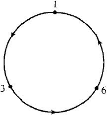

Cicli
Consideriamo un tipo particolare di permutazioni dette cicli. Sia n un intero positivo:
Definizione P.4 - Si dice ciclo ogni σ∈ Sn per cui esistano un intero positivo tale che a1, a2, ..., ar, siano elementi distinti dell'insieme {1, 2, .., n} e per cui valgano le seguenti condizion:
σ(a1) = a2, σ(a2) = a3, ..., σ(σr-1) = ar, σ(ar) = a1
σ(k) = k, per ogni k ∈ {1,..,n} \ { a1,...,ar }
Il numero r si dice lunghezza di σ. Una permutazione ciclica di lunghezza si dice anche un r-ciclo.
Un ciclo si scrive in notazione matriciale come:
Rappresenta quindi la permutazione che sposta in avanti di una posizione tutti gli ai e tiene fissi gli altri:
Oltre alla notazione matriciale, si utilizza anche la scrittura ciclica:
(a1 a2 a2 ... ar)

Ad esempio (1 4 2 6) ∈ σ6 è la permutazione:

Un modo per visualizzare il ciclo è tramite il diagramma:
che corrisponde alla permutazione:
che agisce su 1, 3 e 6 , ma lascia i rimanenti interi 2,4, 5, 7 e 8 invariati.
Ogni ciclo di lunghezza 1 è la permutazione identica. Infatti in base alla definizoine per ogni a1, a2, ..., ar ∈ {1, 2, ..., n}, la permutazione σ(a1) = a1 e per ogni k ∈ {1, 2, ..., n}, k≠ a1, σ(k)=k.
Un ciclo di lughezza 2 si dice trasposizione. Una trasposizione scambia tra loro due elementi e lascia fissi tutti gli altri.
Ad esempio, considerando la trasposizione (2 4) sull'insiene {1, 2, 3, 4}, allora questa rappresenta la permutazione:
Se τ è una trasposizione si ha chiaramente, τ ∘ τ = 1, la permutazione identica. Una trasposizione è quindi inversa di sè stessa.
Due cicli si dicono disgiunti se nella loro rappresentazione non compaiono simboli comuni; ossia se: {a1, a2, ..., ar} ⋂ {b1, b2, ..., bs} = ∅
Ad esempio i cicli (1 5 2) (3 4) sono disgiunti, mentre non lo sono i cicli (1 4 3) (2 1).
Useremo la terminologia prodotto di permutazioni (o trasposizioni), come sinonimo di composizione di permutazioni. Chiaramente, la composizione di due permutazioni è una permutazione e ogni permutazione ha un'inversa che è anch'essa una permutazione.
Proposizione P.0 - Siano σ e τ due cicli disgiunti in SX. Allora
στ = τ σ.
Per ogni x ∈ X
Dim.- Sia σ = (a1, a2, ..., ar ) e τ = (b1, b2, ..., bs ). Bisogna dimostrare che στ (x) = τ σ(x) ∀ x ∈ X. Se x non è nè in {a1, a2, ..., ar } nè in {b1, b2, ..., bs }, allora per la definizione di ciclo si ha: σ(x) = x and τ (x) = x. Quindi:
στ (x) = σ(τ (x)) = σ(x) = x = τ (x) = τ (σ(x)) = τ σ(x)
Bisogna fare attenzione al fatto che si moltiplicano le permutazioni dalla destra verso la sinistra in senso opposto a quanto si faccia generalmente con gli elementi dei gruppi. Si supponga adesso che x ∈ {a1, a2, ..., ar}. Then σ(ai) = a(i mod k)+1;
Dato, che τ è disgiunta da σ si ha τ (ai) = ai. Quindi:
στ (ai) = σ(τ (ai)) = a(i mod k)+1 = τ(a(i mod k)+1)) = τ (σ(ai)) = τ σ(ai).□
Proposizione P.1
Ogni permutazione p ∈ σn è prodotto di cicli a due a due disgiunti.
Ogni permutazione p ∈ σn è prodotto di trasposizioni.
Dim. 1) Sia a1 il primo numero in {1,...,n} tale che f(a1) ≠ a1. Sia f(a1) = a2, f(a2) = a3 e così via in successione sinchè non si arriva alla prima ripetizione del ciclo ossia sinchè f(ak) = a1. In questo modo il ciclo si chiude e abbiamo così trovato il primo ciclo (a1, a2, ..., ak). Se r=n allora p= (a1 a2 an) e l'asserto è dimostrato.
In caso contrario si scelga un b1 che non sia stato ancora esaminato ossia b1 ∈ {1,...,n} \ {a1,...,ar} e tale che f(b1) ≠ b1. Sia f(b1) = b2, f(b2) = b3 e così via. Si proceda come prima sino ad ottenere un ciclo (b1 b2 ... bs) disgiunto dal primo. Procedendo in questo modo si ottengono un numero finito di cicli disgiunti K1, K2 ... Ki, tali che:
p = K1 ° K2 ° ... ° Ki
2) E' sufficiente provare che ogni ciclo è un prodotto di transposizioni, dato che per la 1) ogni permutazione è prodotto di cicli.
(a1, a2, ..., an) = (a1 an) ° (a1 an-1) ° ... ° (a1 a3) ° (a1 a2)
Per la dimostrazione ricorriamo al principio di induzione; Per n=2, il ciclo diviene (a1 a2)
Passo Induttivo: Sia per ipotesi il teorema vero per n=k, ossia:
(a1, a2, ..., ak) = (a1, ak) ° (a1, ak-1) ° ... ° (a1, a2) 1.0
Consideriamo il ciclo di lunghezza k+1 (a1, a2, ..., ak+1), si ha allora:
(a1, a2, ..., ak+1) = (a1, ak+1) ° (a1, a2, ..., an) 1.1
Sostituendo la (1.0) nella (1.1) si ha:
(a1, a2, ..., ak ak+1) = (a1 ak+1) ° (a1 ak) ° ... ° (a1 a3) ° (a1 a2)
che prova la tesi. □
L'insieme delle permutazioni degli n numeri naturali è quindi un gruppo chiamato gruppo di permutazione di grado n; mostreremo che tale gruppo è formato da n! elementi.
Esempio. Consideriamo l'insieme A = {a,b,c} di n=3 elementi. Il numero di permutazioni è pari a
P3 = 3 * 2 *1 = 6
infatti abbiamo i seguenti ordinamenti (sottoinsiemi):
a,b,c a,c,b b,c,a b,a,c c,b,a c,a,b
Il numero delle permutazioni di n elementi lo indichiamo con il simbolo Pn.
Teorema P.2 Il numero delle permutazioni di n, Pn è n!. La cardinalità di Sn è dunque n! :

questo prodotto si indica anche con il simbolo fattoriale n!:
Pn = 1 ⋅ 2 ⋅ 3 ⋅ ... ⋅ n = n!
La funzione fattoriale n! è così definita:
Dimostrazione. Supponiamo di conoscere Pn-1 e di voler calcolare Pn. Osserviamo che per ogni ordinamento dell'insieme O:
Se ne ottengono n per l'insieme:
Si può intercalare l'elemento an all'interno di O al primo posto, secondo, terzo,...,nmo posto. Desumendo che per ad ogni ordinamento O se ne ottengono n per il secondo.
si ha quindi:
Consideriamo un particolare k-ciclo σ; ∈ Sm. Si ha chiaramente σ(1) = 2, per definizione; Inoltre σ(2) = 3. Si ha quindi σ2 (1) = σ(2) = 3. Dove σ2 (1) = σ(σ(1)). Continuando si osserva che σj(1) = j + per j≤ k-1, mentre σk(1)=1. Infatti si osserva che σk = id
Segno di una permutazione
Definiamo ora il segno o la parità di una permutazione. Assegnata una permutazione di n elementi come fondamentale, per esempio quella in cui gli elementi sono ordinati secondo l'indice crescente.